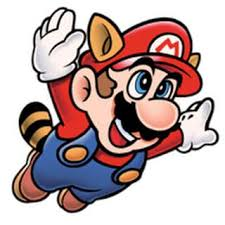
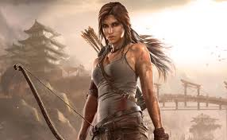

Personajes Legendarios

Mario
El fontanero más famoso del mundo, símbolo de Nintendo y del gaming en general.

Master Chief
El soldado espartano de Halo, ícono de Xbox y héroe intergaláctico.

Lara Croft
Exploradora, arqueóloga y una de las protagonistas más emblemáticas de los videojuegos.
cristiano ronaldo
En FIFA 18, Cristiano Ronaldo es el jugador con la mayor valoración general (\(94\)), es la estrella de la portada del juego y aparece como delantero del Real Madrid. Su fuerza, resistencia y repertorio de habilidades ofensivas lo hacen un futbolista "total" y muy valioso en el modo Ultimate Team, aunque su elevado precio puede ser un obstáculo.